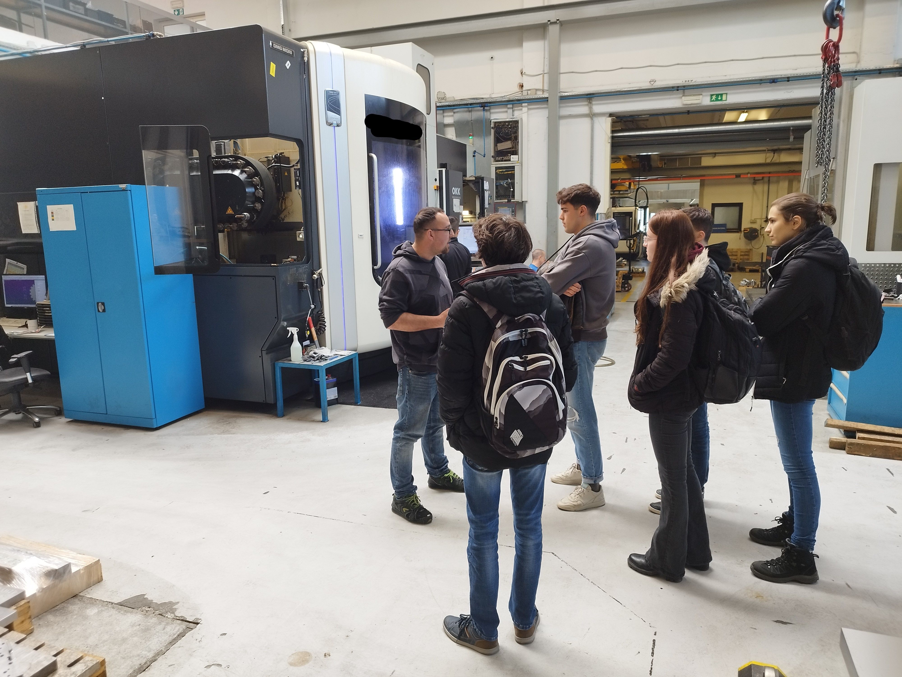

<div class="container content">
  <div class="page">
    <div style="display: flex;">
        
        
        
    </div>
    <h1 class="page-title">O projektu</h1>
    <p class="message">
    Projekt napovedovanje in optimizacija proizvodnje v orodjarstvu
    </p>

    <p>Projekt je namenjen preučevanju, kako se lahko uporabi napovedovanje in optimizacija za izboljšanje proizvodnih procesov v orodjarski industriji. Na projektu sodeluje 10 študentov s Fakultete za računalništvo in informatiko ter Fakultete za strojništvo Univerze v Ljubljani.</p>

    <h3>Mehki cilji projekta:</h3>
    <ul>
    <li>seznanitev študentov s praktičnimi problemi</li>
    <li>delo v raznoliki skupini</li>
    <li>pozitivni učinki interdisciplinarnosti</li>
    <li>stik industrije in akademskega sveta</li>
    </ul>

    <h3>Vsebinski cilji projekta:</h3>
    <ul>
    <li>preučiti nabor konkretnih problemov s katerimi se podjetje srečuje</li>
    <li>ponuditi različne načine reševanja takih problemov</li>
    <li>implementirati postopke, ki rešuje določen problem</li>
    <li>implementirati prototipno aplikacijo za reševanje problema</li>
    </ul>

    <h3>Rezultati projekta:</h3>
    <ul>
    <li>spisek zanimivih problemov za informatizacijo</li>
    <li>nabor tehnologij, ki olajšajo delo v praksi</li>
    <li>analiza trenutnega stanja z orodji podatkovne znanosti</li>
    <li>prototipna aplikacija za analizo CAD slik</li>
    <li>odločitveni postopki za avtomatizacijo odločitev</li>
    <li>implementacije določenih značilk za odločitveni postopek</li>
    </ul>

    <p>Projekt je financiran iz sredstev javnega razpisa 
      Projektno delo za pridobitev praktičnih izkušenj in znanj študentov 
      v delovnem okolju 2022/23.</p>
    
    <div>
      <h3>Obisk podjetja ORO Orodjarna d.o.o.:</h3>
      <p>V četrtek, 6.4.2023, smo nekateri študenti, ki sodelujemo v projektu, 
        obiskali podjetje ORO Orodjarna d.o.o. na njihovi lokaciji v Neverkah. 
        Z ogledom smo začeli v zgornjem nadstropju stavbe, kjer smo se najprej 
        v sejni sobi sestali s predstavnikoma podjetja in se pogovorili o 
        njihovih željah ter potrebah, nato pa smo si v sosednjem prostoru še 
        ogledali primere izdelkov, ki so bili izdelani s pomočjo orodij, ki jih 
        izdelujejo v podjetju. Nadaljevali smo v pritličju, kjer smo si ogledali 
        različna obdelovalna orodja, njihovo uporabo v različnih obdelovalnih 
        procesih ter končne izdelke, preden jih pošljejo naročnikom.</p>
      
      
      
    </div>
  </div>
</div>

</div>
